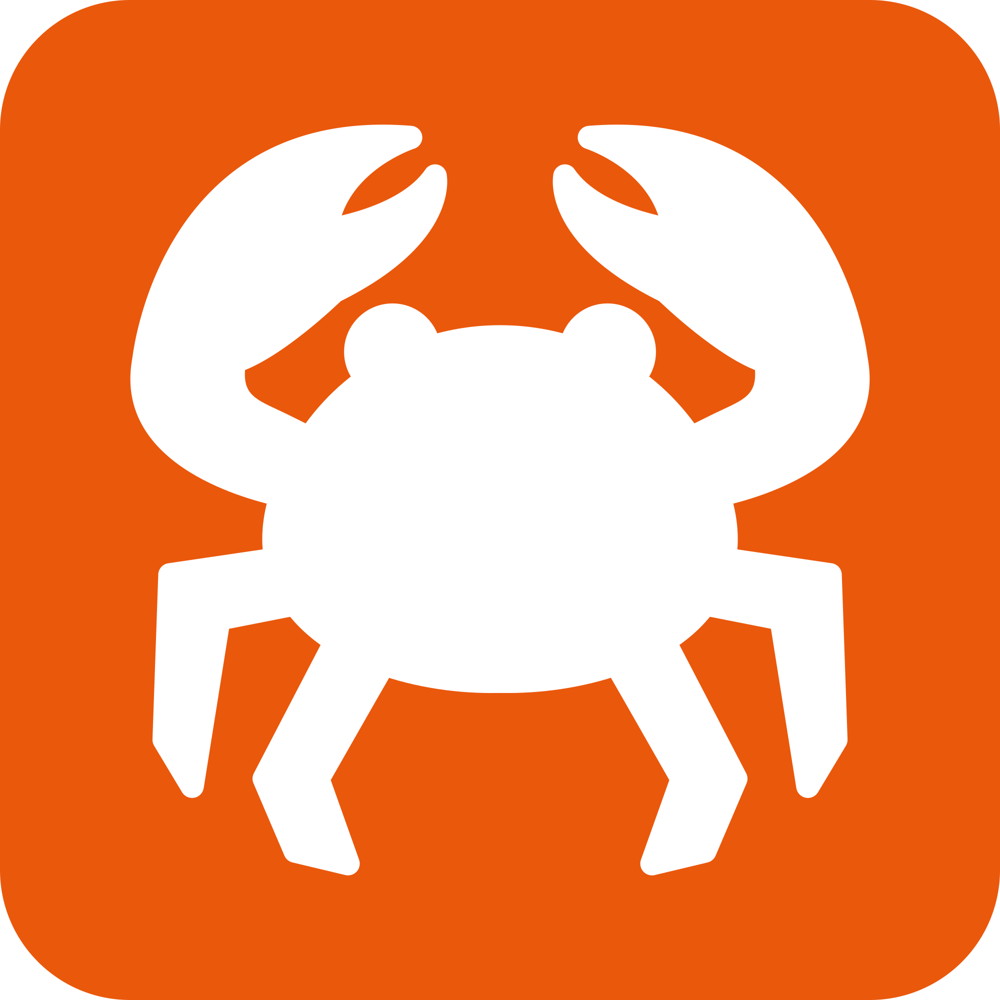

Control Center
See gateway health, CPU/RAM pressure, tokens used and OpenClaw version before anything breaks.
Install LocalClaw once. Control your local models, agents, channels and scheduled OpenClaw work from a native macOS dashboard.
Installer $49. No signup. No prompts collected. Runs on your machine.


// THE APP
A native macOS control center for the local AI stack you already own: models, agents, channels, schedules and system health.
See gateway health, CPU/RAM pressure, tokens used and OpenClaw version before anything breaks.
Switch between Local LLM, Cloud LLM and OAuth LLM without hand-editing config files.
Create autonomous OpenClaw agents, assign models and keep their local workspace visible.
Schedule recurring local tasks and see what will run, when it runs and which agent owns it.
Turn local automation into visible work: backlog, ready, doing, review and done.
Use beta dev tools, channel connections and local skills from the same dashboard.
// LOCAL FIT ENGINE
LocalClaw ranks models by practical local fit: your memory headroom, context target, use case, quantization and install path. Every recommendation explains why it was picked.
RAM, VRAM, OS and model size decide whether a model feels instant or painful.
Apple M4 · 16 GB → laptop-safe picks
Long context increases KV cache memory, so LocalClaw warns before a model becomes slow.
32K context → extra headroom check
Coding, chat, reasoning, vision and speed priorities change the shortlist transparently.
Coding → code benchmark + model tags
The best model is the one you can actually load locally with the right quantization.
Q5_K_M / Q4_K_M shown upfront
// START HERE
Pick a practical path. Each guide connects hardware, RAM, model fit and the next LocalClaw action.
Hardware
Start from the machine and choose models that fit unified memory.
RAM
Laptop-safe picks that avoid memory pressure and slow inference.
Use case
Private code assistants, agents, debugging and repo workflows.
Voice
Speech models for private voice workflows and offline pipelines.
LocalClaw
Manual setup
// CATALOGUE
Frontier
1.6T MoE · 49B active · local catalogue
Agentic
744B MoE · 1M context · workstation class
Laptop
Balanced local model for 16 GB+
New
Unified multimodal sweet spot for 16 GB+
Voice
Real-time CPU TTS and voice cloning
New voice
2B zero-shot voice cloning · Apache 2.0
LM Studio is a free desktop application that lets you run Large Language Models (LLMs) locally on your computer. No internet needed, no data sent anywhere. It provides a chat interface similar to ChatGPT but everything runs on YOUR hardware.
Quantization is a compression technique that reduces model size while preserving most of the quality. Think of it like JPEG compression for images. Q4 = more compressed (smaller, slightly lower quality), Q8 = less compressed (larger, nearly original quality). Q5_K_M is the sweet spot for most users.
Rule of thumb: the model file size plus 2-3 GB for the system. A 5 GB model needs at least 8 GB RAM. On macOS with Apple Silicon, the unified memory makes things more efficient. On Windows/Linux with a GPU, VRAM helps offload the model.
Apple Silicon (M1-M4) uses unified memory, meaning your entire RAM is available for the model. This is incredibly efficient. NVIDIA GPUs are faster for inference but limited by VRAM (typically 8-24 GB). Both are great choices.
Yes. The model finder runs in your browser and does not collect prompts, hardware specs, or selected models. When using LM Studio with recommended models, inference runs locally on your machine with no cloud API calls.
For 8 GB RAM: Qwen 3.5 4B or Gemma 4 E4B. For 16 GB: Gemma 4 12B, Qwen 3.5 9B, GLM 4.6 Air 12B or Mistral Small 3.2 24B (tight). For 32 GB+: Gemma 4 31B, Qwen 3 Next 80B/3B MoE or Qwen 3 Coder 30B. For reasoning: Kimi K2 Thinking, DeepSeek V3.2 Exp, or Hermes 4 70B. For coding: MiniMax M2 and Qwen 3 Coder. For vision: Qwen 3 VL 32B or Gemma 4 multimodal.
OpenClaw is the open-source, self-hosted AI assistant at the heart of the LocalClaw ecosystem. It connects to your local models running in LM Studio or Ollama and provides a unified chat interface on desktop, web, and CLI. It's 100% private — no telemetry, no cloud, no API keys required.
The LocalClaw web model finder is free: use it to choose the right LLM/TTS model for your hardware. The LocalClaw beta app is the optional native macOS app that simplifies setup, handles activation, supports updates and helps manage your local AI stack. No terminal-first workflow. The current beta lifetime offer is $49 one-time, no subscription, no recurring fees. Your license is valid forever. See pricing →